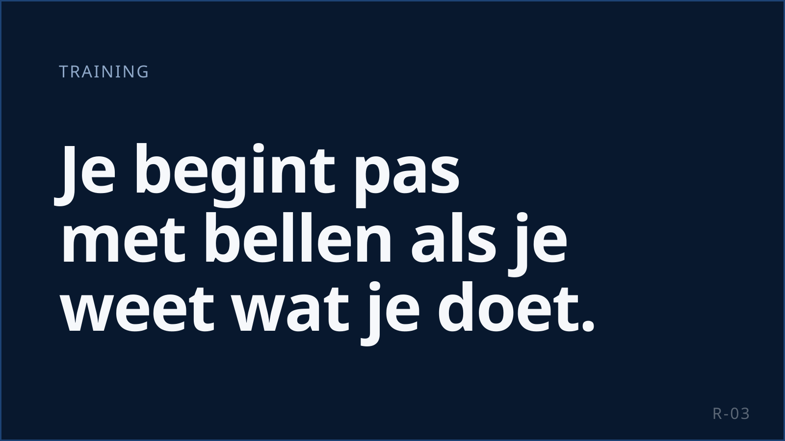
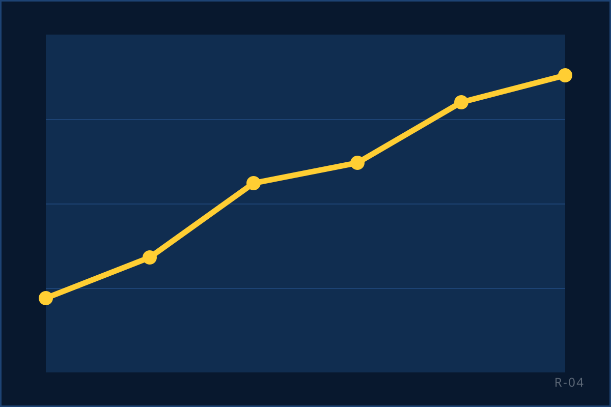
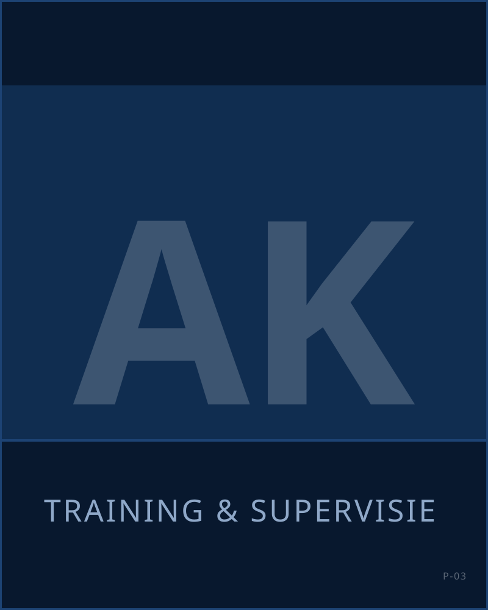

Sales is een vak. Hier leer je het.
Geen ervaring nodig. Je krijgt vijf dagen training voordat je je eerste gesprek voert. Daarna zit je supervisor naast je.

Vijf dagen voordat je belt
Bij KISS begint niemand op de vloer zonder training. Vijf dagen, in een groep, met Angelo Kollau als trainer. Je leert het product, het gesprek en de regels. Pas daarna ga je bellen, met ervaren collega's om je heen die je vragen beantwoorden.
Waar de week over gaat:
- Het gesprek. Hoe open je, hoe luister je, hoe stel je een vraag waar iemand echt antwoord op geeft. Hoe ga je om met "nee" zonder te duwen.
- Het product. Waarvoor je belt en waarom het interessant is voor de klant. Je verkoopt beter wat je snapt.
- De regels. Je zegt aan het begin van elk gesprek wie je bent, namens wie je belt en waarom. Wie niet gebeld wil worden, wordt niet meer gebeld. Gesprekken worden opgenomen voor kwaliteit; dat hoort de klant ook. Dit is geen bijzaak: het is wat een professional onderscheidt van een cowboy.
- Het systeem. Waar je je gesprek vastlegt en hoe je je eigen cijfers leest.
- Oefenen. Gesprekken naspelen, terugluisteren, opnieuw.
Dag-tot-dag-programma: CIJFER — intern valideren (Angelo levert de outline aan)
Op de vloer leer je het echt
Een supervisor voor 10 tot 15 agents
Niet één teamleider voor een hele zaal. Je supervisor kent je naam, je cijfers en je gesprekken. Je kunt altijd iets vragen.
Gespreksanalyse
Je supervisor luistert je gesprekken terug. Niet om je te betrappen, maar om te horen waar het beter kan: de opening, de vraag die je vergat, het moment waarop je te snel afsloot. Dit is het snelste leermiddel dat er is.
Dagelijkse coaching
Een coachgesprek is kort en concreet. Wat ging goed, wat probeer je vandaag anders. Je krijgt tips, geen preek. Wie wil, wordt hier elke week beter.

Van agent naar de rest
Het pad bij KISS loopt van agent naar senior agent, en van daaruit naar supervisor of trainer. Supervisors sturen een eigen team aan, luisteren gesprekken terug, sturen bij op resultaat en rapporteren aan directie en opdrachtgever. Trainers leiden de nieuwe groepen op.
Wanneer je in aanmerking komt en wat de stap betekent voor je loon: BELONING — bevestigen.
FOTO/QUOTE — medewerker, toestemming × 2: doorgroeiverhalen
Wie je traint

Angelo KollauTraining & Supervisie
Geeft de vijfdaagse training en werkt daarna op de vloer met de supervisors. Hij hoort dus zelf hoe de gesprekken lopen die hij heeft getraind.
Vragen over training en doorgroei
Wat als ik het na de training nog niet kan?
Dan ben je normaal. De training geeft je de basis; de vloer maakt je goed. De eerste weken zit je supervisor dichtbij en krijg je dagelijks feedback.
Wordt de trainingsweek betaald?
BELONING — bevestigen
Kan ik doorgroeien als ik parttime werk?
Het pad staat open voor iedereen. Hoe snel je gaat, hangt af van je resultaten en hoe vaak je er bent. CIJFER — intern valideren (doorgroeicriteria)
Krijg ik een certificaat?
CIJFER — intern valideren (of de training met een certificaat of bewijs van deelname wordt afgesloten)
Beginnen met leren?
Vijf dagen training, dan de vloer. Solliciteren duurt twee minuten.